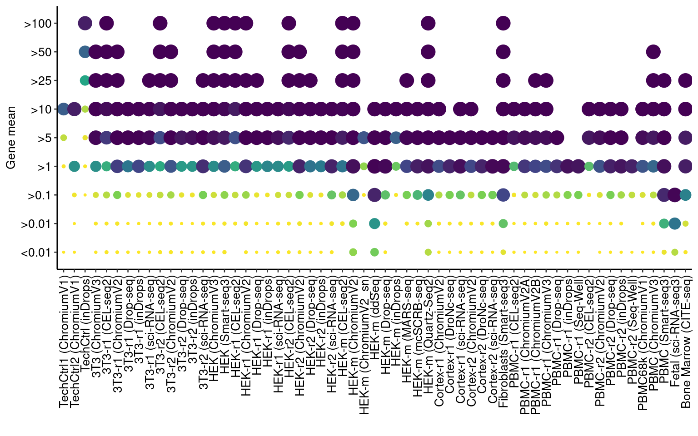
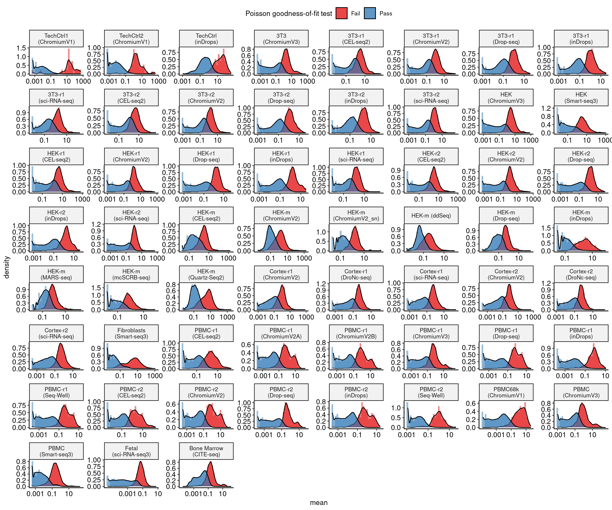
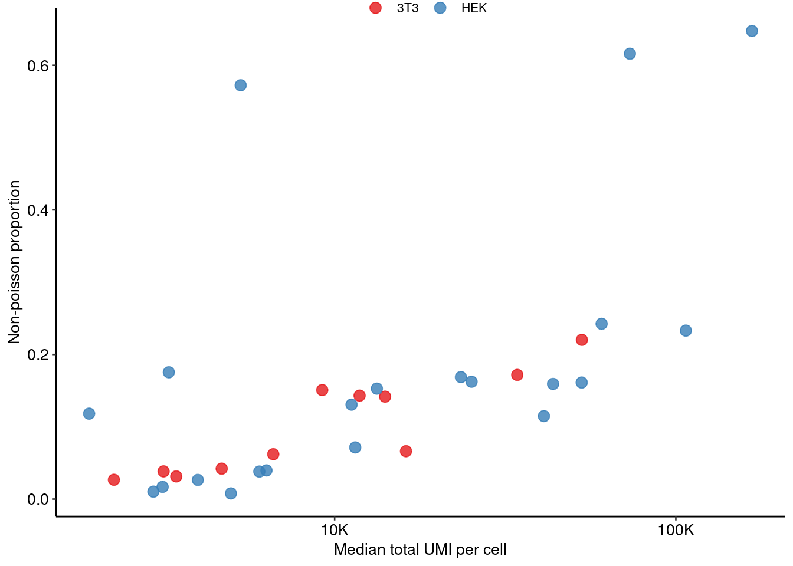
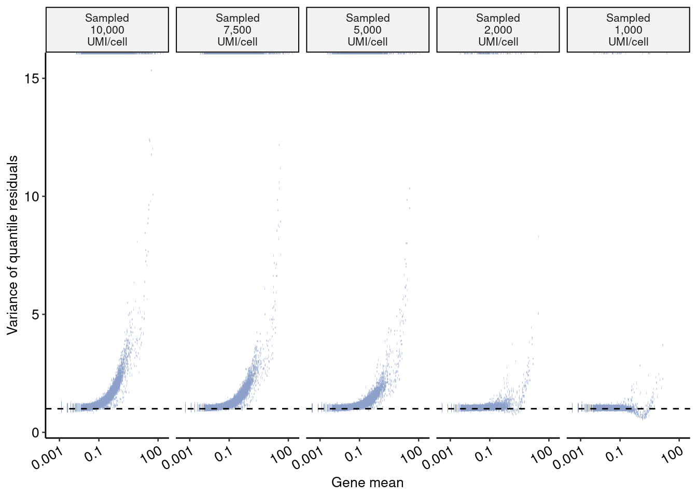

Last updated: 2021-07-07
Checks: 7 0
Knit directory: scRNA_NB_comparison/
This reproducible R Markdown analysis was created with workflowr (version 1.6.2). The Checks tab describes the reproducibility checks that were applied when the results were created. The Past versions tab lists the development history.
Great! Since the R Markdown file has been committed to the Git repository, you know the exact version of the code that produced these results.
Great job! The global environment was empty. Objects defined in the global environment can affect the analysis in your R Markdown file in unknown ways. For reproduciblity it’s best to always run the code in an empty environment.
The command set.seed(20210706) was run prior to running the code in the R Markdown file. Setting a seed ensures that any results that rely on randomness, e.g. subsampling or permutations, are reproducible.
Great job! Recording the operating system, R version, and package versions is critical for reproducibility.
Nice! There were no cached chunks for this analysis, so you can be confident that you successfully produced the results during this run.
Great job! Using relative paths to the files within your workflowr project makes it easier to run your code on other machines.
Great! You are using Git for version control. Tracking code development and connecting the code version to the results is critical for reproducibility.
The results in this page were generated with repository version 052425f. See the Past versions tab to see a history of the changes made to the R Markdown and HTML files.
Note that you need to be careful to ensure that all relevant files for the analysis have been committed to Git prior to generating the results (you can use wflow_publish or wflow_git_commit). workflowr only checks the R Markdown file, but you know if there are other scripts or data files that it depends on. Below is the status of the Git repository when the results were generated:
Ignored files:
Ignored: data/raw_data/
Ignored: data/rds_filtered/
Ignored: data/rds_raw/
Ignored: data/sampled_counts/
Ignored: output/snakemake_output/
Untracked files:
Untracked: output/figures/
Untracked: output/tables/
Note that any generated files, e.g. HTML, png, CSS, etc., are not included in this status report because it is ok for generated content to have uncommitted changes.
These are the previous versions of the repository in which changes were made to the R Markdown (analysis/09_Figure1.Rmd) and HTML (docs/09_Figure1.html) files. If you’ve configured a remote Git repository (see ?wflow_git_remote), click on the hyperlinks in the table below to view the files as they were in that past version.
| File | Version | Author | Date | Message |
|---|---|---|---|---|
| Rmd | 400797a | Saket Choudhary | 2021-07-06 | workflowr::wflow_git_commit(all = TRUE) |
| html | 400797a | Saket Choudhary | 2021-07-06 | workflowr::wflow_git_commit(all = TRUE) |
datasets <- readr::read_csv(here::here("data", "datasets.csv"), col_types = readr::cols())
datasets$datatype <- factor(datasets$datatype, levels = c("technical-control", "cell line", "heterogeneous"))
datasets <- datasets %>% arrange(datatype)QVALUE_THRESHOLD <- 1e-2
ncells <- "1000"
residual_type <- "quantile"
nb_column <- paste0("qval_ssr", "_", residual_type)
ssr_column <- paste0("ssr", "_", residual_type, "_normalized")
root_dir <- here::here("output/snakemake_output/poisson_glm_output", ncells)
fits <- GetFits(root_dir, qval_col = nb_column)
fits_dfx <- fits[["fits"]]
frac_dfx <- fits[["frac_df"]]
cell_attrs <- fits[["cell_attrs"]]
gene_attrs <- fits[["gene_attrs"]]
fits_df <- ProcessFits(fits_dfx, datasets, nb_column)
frac_df <- left_join(frac_dfx, datasets, by = "key")frac_df_subset <- frac_df[, c(
"sample_name", "datatype",
"median_gene_avg_umi", "median_cell_total_umi", "nonpoisson_fraction"
)] %>% arrange(nonpoisson_fraction)
frac_df_subset <- frac_df_subset %>% mutate(across(where(is.numeric), round, 3))
kbl(frac_df_subset, booktabs = T) %>%
kable_styling(latex_options = "striped")| sample_name | datatype | median_gene_avg_umi | median_cell_total_umi | nonpoisson_fraction |
|---|---|---|---|---|
| TechCtrl1 (ChromiumV1) | technical-control | 0.007 | 2264.5 | 0.001 |
| TechCtrl2 (ChromiumV1) | technical-control | 0.007 | 2165.0 | 0.004 |
| TechCtrl (inDrops) | technical-control | 0.365 | 32905.0 | 0.005 |
| PBMC-r2 (Seq-Well) | heterogeneous | 0.009 | 521.0 | 0.007 |
| HEK-m (ChromiumV2_sn) | cell line | 0.171 | 4967.0 | 0.008 |
| PBMC-r1 (inDrops) | heterogeneous | 0.010 | 798.0 | 0.009 |
| HEK-m (inDrops) | cell line | 0.108 | 2943.0 | 0.010 |
| PBMC68k (ChromiumV1) | heterogeneous | 0.011 | 1513.0 | 0.011 |
| PBMC-r1 (Drop-seq) | heterogeneous | 0.012 | 1554.5 | 0.015 |
| PBMC-r2 (CEL-seq2) | heterogeneous | 0.069 | 5917.0 | 0.016 |
| PBMC-r2 (ChromiumV2) | heterogeneous | 0.021 | 2850.5 | 0.016 |
| HEK-r1 (inDrops) | cell line | 0.042 | 3132.0 | 0.017 |
| PBMC-r1 (Seq-Well) | heterogeneous | 0.011 | 1200.0 | 0.017 |
| PBMC-r1 (ChromiumV2A) | heterogeneous | 0.016 | 2384.0 | 0.018 |
| PBMC-r2 (inDrops) | heterogeneous | 0.018 | 1690.0 | 0.019 |
| PBMC-r1 (ChromiumV2B) | heterogeneous | 0.019 | 3286.0 | 0.020 |
| PBMC-r1 (CEL-seq2) | heterogeneous | 0.071 | 6848.0 | 0.021 |
| HEK-r2 (inDrops) | cell line | 0.052 | 3973.0 | 0.027 |
| 3T3-r1 (inDrops) | cell line | 0.051 | 2255.0 | 0.027 |
| PBMC-r2 (Drop-seq) | heterogeneous | 0.017 | 2486.5 | 0.028 |
| 3T3-r2 (Drop-seq) | cell line | 0.080 | 3434.0 | 0.031 |
| Cortex-r2 (ChromiumV2) | heterogeneous | 0.042 | 3980.5 | 0.036 |
| 3T3-r1 (Drop-seq) | cell line | 0.072 | 3152.5 | 0.038 |
| HEK-r1 (Drop-seq) | cell line | 0.053 | 6015.5 | 0.039 |
| HEK-r2 (Drop-seq) | cell line | 0.048 | 6312.5 | 0.040 |
| 3T3-r2 (inDrops) | cell line | 0.107 | 4666.5 | 0.041 |
| Cortex-r2 (sci-RNA-seq) | heterogeneous | 0.029 | 3501.5 | 0.046 |
| PBMC-r1 (ChromiumV3) | heterogeneous | 0.029 | 5839.5 | 0.046 |
| Cortex-r1 (DroNc-seq) | heterogeneous | 0.043 | 3013.5 | 0.050 |
| 3T3-r1 (sci-RNA-seq) | cell line | 0.188 | 6609.5 | 0.061 |
| PBMC (ChromiumV3) | heterogeneous | 0.050 | 6992.0 | 0.064 |
| 3T3 (ChromiumV3) | cell line | 0.072 | 16184.5 | 0.066 |
| Cortex-r2 (DroNc-seq) | heterogeneous | 0.050 | 3094.0 | 0.068 |
| Cortex-r1 (ChromiumV2) | heterogeneous | 0.065 | 7132.5 | 0.071 |
| HEK-r1 (sci-RNA-seq) | cell line | 0.220 | 11490.0 | 0.072 |
| Cortex-r1 (sci-RNA-seq) | heterogeneous | 0.031 | 4421.0 | 0.074 |
| HEK (ChromiumV3) | cell line | 0.069 | 41054.5 | 0.116 |
| HEK-m (Drop-seq) | cell line | 0.109 | 1907.5 | 0.116 |
| HEK-m (MARS-seq) | cell line | 0.235 | 11207.5 | 0.131 |
| Fetal (sci-RNA-seq3) | heterogeneous | 0.030 | 6975.5 | 0.134 |
| 3T3-r2 (ChromiumV2) | cell line | 0.185 | 14057.0 | 0.141 |
| 3T3-r1 (ChromiumV2) | cell line | 0.151 | 11834.0 | 0.143 |
| 3T3-r2 (sci-RNA-seq) | cell line | 0.161 | 9199.0 | 0.150 |
| HEK-r2 (sci-RNA-seq) | cell line | 0.096 | 13298.0 | 0.152 |
| HEK-r2 (CEL-seq2) | cell line | 0.389 | 43670.0 | 0.158 |
| HEK-r1 (CEL-seq2) | cell line | 0.615 | 52973.0 | 0.160 |
| HEK-r1 (ChromiumV2) | cell line | 0.108 | 25193.5 | 0.164 |
| HEK-r2 (ChromiumV2) | cell line | 0.096 | 23444.0 | 0.168 |
| 3T3-r1 (CEL-seq2) | cell line | 0.616 | 34291.0 | 0.172 |
| HEK-m (mcSCRB-seq) | cell line | 0.121 | 3266.5 | 0.176 |
| 3T3-r2 (CEL-seq2) | cell line | 1.045 | 53036.0 | 0.220 |
| HEK (Smart-seq3) | cell line | 0.286 | 106996.0 | 0.233 |
| HEK-m (CEL-seq2) | cell line | 0.788 | 60592.5 | 0.242 |
| PBMC (Smart-seq3) | heterogeneous | 0.032 | 9487.5 | 0.396 |
| HEK-m (ddSeq) | cell line | 0.205 | 5304.5 | 0.570 |
| HEK-m (ChromiumV2) | cell line | 0.710 | 73333.5 | 0.617 |
| Fibroblasts (Smart-seq3) | heterogeneous | 0.526 | 197151.0 | 0.627 |
| HEK-m (Quartz-Seq2) | cell line | 1.576 | 167199.0 | 0.643 |
dir.create(here::here("output", "tables"), showWarnings = F)
print(xtable(frac_df_subset, type = "latex", digits=3), include.rownames = FALSE, file = here::here("output/tables/fraction_nonpoisson.tex"))medium_high_gene_pois <- list()
for (sample_name in unique(fits_df$sample_name)) {
df <- fits_df[fits_df$sample_name == sample_name, ]
med_abundance <- df[(df$mean > 1),]# & (df$mean <= 10), ]
med_abundance_nonpois <- med_abundance[med_abundance$gene_type != "Pass", ]
ratio <- dim(med_abundance_nonpois)[1] / dim(med_abundance)[1]
medium_high_gene_pois[[sample_name]] <- data.frame(ratio = ratio, n_med_high_nonpoisson = dim(med_abundance_nonpois)[1], n_med_high = dim(med_abundance)[1], n_all = dim(df)[1])
}
medium_high_gene_pois <- bind_rows(medium_high_gene_pois, .id = "sample_name")
kbl(medium_high_gene_pois, booktabs = T) %>%
kable_styling(latex_options = "striped")| sample_name | ratio | n_med_high_nonpoisson | n_med_high | n_all |
|---|---|---|---|---|
| TechCtrl1 (ChromiumV1) | 0.1200000 | 18 | 150 | 20167 |
| TechCtrl2 (ChromiumV1) | 0.5942029 | 82 | 138 | 20838 |
| TechCtrl (inDrops) | 0.0248205 | 159 | 6406 | 25255 |
| 3T3 (ChromiumV3) | 0.5739750 | 1288 | 2244 | 21920 |
| 3T3-r1 (CEL-seq2) | 0.4772430 | 2915 | 6108 | 15457 |
| 3T3-r1 (ChromiumV2) | 0.8469945 | 1550 | 1830 | 15390 |
| 3T3-r1 (Drop-seq) | 0.6404293 | 358 | 559 | 13904 |
| 3T3-r1 (inDrops) | 0.8095238 | 238 | 294 | 13337 |
| 3T3-r1 (sci-RNA-seq) | 0.5337150 | 839 | 1572 | 12806 |
| 3T3-r2 (CEL-seq2) | 0.5292932 | 3939 | 7442 | 14620 |
| 3T3-r2 (ChromiumV2) | 0.7796818 | 1911 | 2451 | 15127 |
| 3T3-r2 (Drop-seq) | 0.5175953 | 353 | 682 | 13977 |
| 3T3-r2 (inDrops) | 0.5410200 | 488 | 902 | 12354 |
| 3T3-r2 (sci-RNA-seq) | 0.8837209 | 1824 | 2064 | 15608 |
| HEK (ChromiumV3) | 0.6252152 | 3268 | 5227 | 26012 |
| HEK (Smart-seq3) | 0.7991825 | 7625 | 9541 | 27097 |
| HEK-r1 (CEL-seq2) | 0.5020683 | 4248 | 8461 | 19628 |
| HEK-r1 (ChromiumV2) | 0.8846924 | 3092 | 3495 | 21809 |
| HEK-r1 (Drop-seq) | 0.5256125 | 708 | 1347 | 19149 |
| HEK-r1 (inDrops) | 0.6119048 | 257 | 420 | 17091 |
| HEK-r1 (sci-RNA-seq) | 0.5555202 | 1746 | 3143 | 17299 |
| HEK-r2 (CEL-seq2) | 0.5539335 | 4098 | 7398 | 20294 |
| HEK-r2 (ChromiumV2) | 0.9304878 | 3052 | 3280 | 22655 |
| HEK-r2 (Drop-seq) | 0.6598891 | 714 | 1082 | 20614 |
| HEK-r2 (inDrops) | 0.6548387 | 406 | 620 | 17862 |
| HEK-r2 (sci-RNA-seq) | 0.9221675 | 2808 | 3045 | 23608 |
| HEK-m (CEL-seq2) | 0.6930805 | 6761 | 9755 | 21665 |
| HEK-m (ChromiumV2) | 0.9761956 | 9063 | 9284 | 21669 |
| HEK-m (ChromiumV2_sn) | 0.1847826 | 153 | 828 | 16502 |
| HEK-m (ddSeq) | 0.9952525 | 2306 | 2317 | 18354 |
| HEK-m (Drop-seq) | 0.9843505 | 629 | 639 | 15794 |
| HEK-m (inDrops) | 0.3333333 | 174 | 522 | 13118 |
| HEK-m (MARS-seq) | 0.8183222 | 1590 | 1943 | 18091 |
| HEK-m (mcSCRB-seq) | 0.9458333 | 1135 | 1200 | 13760 |
| HEK-m (Quartz-Seq2) | 0.9814356 | 11895 | 12120 | 21535 |
| Cortex-r1 (ChromiumV2) | 0.7914110 | 903 | 1141 | 22947 |
| Cortex-r1 (DroNc-seq) | 0.9180887 | 269 | 293 | 21965 |
| Cortex-r1 (sci-RNA-seq) | 0.9776248 | 568 | 581 | 22188 |
| Cortex-r2 (ChromiumV2) | 0.8245614 | 329 | 399 | 22920 |
| Cortex-r2 (DroNc-seq) | 0.9213251 | 445 | 483 | 21183 |
| Cortex-r2 (sci-RNA-seq) | 0.9878788 | 326 | 330 | 22492 |
| Fibroblasts (Smart-seq3) | 0.9940432 | 10680 | 10744 | 24003 |
| PBMC-r1 (CEL-seq2) | 0.4225513 | 371 | 878 | 19767 |
| PBMC-r1 (ChromiumV2A) | 0.9219512 | 189 | 205 | 21706 |
| PBMC-r1 (ChromiumV2B) | 0.8710801 | 250 | 287 | 21922 |
| PBMC-r1 (ChromiumV3) | 0.8385214 | 431 | 514 | 22851 |
| PBMC-r1 (Drop-seq) | 0.8555556 | 154 | 180 | 21292 |
| PBMC-r1 (inDrops) | 0.9696970 | 64 | 66 | 17972 |
| PBMC-r1 (Seq-Well) | 0.9624060 | 128 | 133 | 21785 |
| PBMC-r2 (CEL-seq2) | 0.4237288 | 275 | 649 | 19705 |
| PBMC-r2 (ChromiumV2) | 0.8448276 | 196 | 232 | 22283 |
| PBMC-r2 (Drop-seq) | 0.9432314 | 216 | 229 | 23577 |
| PBMC-r2 (inDrops) | 0.9754601 | 159 | 163 | 19143 |
| PBMC-r2 (Seq-Well) | 0.9411765 | 64 | 68 | 15088 |
| PBMC68k (ChromiumV1) | 0.8490566 | 135 | 159 | 19955 |
| PBMC (ChromiumV3) | 0.7309645 | 576 | 788 | 17853 |
| PBMC (Smart-seq3) | 0.9763514 | 1156 | 1184 | 28768 |
| Fetal (sci-RNA-seq3) | 0.7037037 | 19 | 27 | 46844 |
print(xtable(medium_high_gene_pois, digits=3), include.rownames = FALSE, digits=3, file = here::here("output/tables/medium_high_expr_nonpois_fraction.tex"))nonpoismeanwise <- GetMeanwiseNonPois(fits_df)
nonpoismeanwise <- left_join(nonpoismeanwise, datasets, by = "key")
nonpoismeanwise_df <- nonpoismeanwise[complete.cases(nonpoismeanwise), ]
nonpoismeanwise_df$sample_name <- factor(nonpoismeanwise_df$sample_name, levels = datasets$sample_name)
nonpoismeanwise_filtered <- nonpoismeanwise_df[nonpoismeanwise_df$n_total_genes >= 10, ]
plot.dots <- ggplot(nonpoismeanwise_filtered, aes(sample_name, mean_quantile,
color = nonpoisson_fraction,
size = nonpoisson_fraction
)) +
geom_point() +
scale_color_viridis_c(
direction = -1,
breaks = c(0.25, 0.5, 0.75, 1),
name = "Non-poisson fraction"
) +
scale_size(
name = "Non-poisson fraction",
breaks = c(0.25, 0.5, 0.75, 1),
range = c(0.5, 5)
) +
theme_pubr(base_size = 10) +
theme(legend.position = "right", legend.direction = "horizontal") +
guides(color = guide_legend(), size = guide_legend()) +
guides(x = guide_axis(angle = 90)) +
xlab("") +
ylab("Gene mean") +
theme(legend.position = c(0.8, 1.05))
plot.dots
| Version | Author | Date |
|---|---|---|
| 400797a | Saket Choudhary | 2021-07-06 |
nonpoismeanwise_filtered_subset <- nonpoismeanwise_filtered[, c("sample_name", "mean_quantile", "nonpoisson_fraction")]
nonpoismeanwise_filtered_subset2 <- tidyr::spread(nonpoismeanwise_filtered_subset, mean_quantile, nonpoisson_fraction)
kbl(nonpoismeanwise_filtered_subset2, booktabs = T) %>%
kable_styling(latex_options = "striped")| sample_name | <0.01 | >0.01 | >0.1 | >1 | >5 | >10 | >25 | >50 | >100 |
|---|---|---|---|---|---|---|---|---|---|
| TechCtrl1 (ChromiumV1) | 0.0001579 | NA | NA | 0.0083333 | 0.1000000 | 0.7000000 | NA | NA | NA |
| TechCtrl2 (ChromiumV1) | 0.0002289 | 0.0001568 | 0.0181219 | 0.5090909 | NA | 0.9285714 | NA | NA | NA |
| TechCtrl (inDrops) | NA | NA | 0.0002956 | 0.0051442 | 0.0369069 | 0.1264822 | 0.4102564 | 0.6734694 | 0.9285714 |
| 3T3 (ChromiumV3) | 0.0016598 | 0.0071594 | 0.0664159 | 0.4941676 | 0.9889503 | 1.0000000 | 1.0000000 | 1.0000000 | NA |
| 3T3-r1 (CEL-seq2) | 0.0071702 | 0.0073620 | 0.1178304 | 0.3713582 | 0.8368984 | 0.9785933 | 1.0000000 | 1.0000000 | 1.0000000 |
| 3T3-r1 (ChromiumV2) | 0.0044398 | 0.0108141 | 0.1958763 | 0.8197038 | 1.0000000 | 1.0000000 | 1.0000000 | 1.0000000 | NA |
| 3T3-r1 (Drop-seq) | 0.0015552 | 0.0006245 | 0.0542621 | 0.6019802 | 1.0000000 | 1.0000000 | NA | NA | NA |
| 3T3-r1 (inDrops) | 0.0008782 | 0.0010646 | 0.0463543 | 0.7786561 | 1.0000000 | 1.0000000 | NA | NA | NA |
| 3T3-r1 (sci-RNA-seq) | 0.0007918 | 0.0033213 | 0.0558642 | 0.4965612 | 0.9873418 | 1.0000000 | 1.0000000 | NA | NA |
| 3T3-r2 (CEL-seq2) | 0.0075930 | 0.0091783 | 0.1038343 | 0.3863328 | 0.7697466 | 0.9505247 | 1.0000000 | 1.0000000 | 1.0000000 |
| 3T3-r2 (ChromiumV2) | 0.0081105 | 0.0062435 | 0.1431002 | 0.7383721 | 1.0000000 | 1.0000000 | 1.0000000 | 1.0000000 | NA |
| 3T3-r2 (Drop-seq) | 0.0012251 | NA | 0.0386980 | 0.4691558 | 0.9534884 | 1.0000000 | NA | NA | NA |
| 3T3-r2 (inDrops) | 0.0009862 | 0.0005052 | 0.0289113 | 0.4843554 | 0.9710145 | 1.0000000 | NA | NA | NA |
| 3T3-r2 (sci-RNA-seq) | 0.0048852 | 0.0075633 | 0.2089249 | 0.8717263 | 1.0000000 | 1.0000000 | 1.0000000 | NA | NA |
| HEK (ChromiumV3) | 0.0030717 | 0.0063885 | 0.0762431 | 0.5129495 | 0.9671642 | 1.0000000 | 1.0000000 | 1.0000000 | 1.0000000 |
| HEK (Smart-seq3) | 0.0124555 | 0.0121248 | 0.1717452 | 0.7031738 | 0.9428066 | 0.9871324 | 1.0000000 | 1.0000000 | 1.0000000 |
| HEK-r1 (CEL-seq2) | NA | 0.0084314 | 0.0921942 | 0.3756942 | 0.7605156 | 0.9398734 | 1.0000000 | 1.0000000 | 1.0000000 |
| HEK-r1 (ChromiumV2) | 0.0054479 | 0.0179791 | 0.1583698 | 0.8531876 | 1.0000000 | 1.0000000 | 1.0000000 | NA | 1.0000000 |
| HEK-r1 (Drop-seq) | 0.0004613 | 0.0029189 | 0.0376685 | 0.4732069 | 1.0000000 | 1.0000000 | 1.0000000 | NA | NA |
| HEK-r1 (inDrops) | 0.0005487 | 0.0011022 | 0.0197816 | 0.5421348 | 1.0000000 | 1.0000000 | NA | NA | NA |
| HEK-r1 (sci-RNA-seq) | 0.0047764 | 0.0069048 | 0.0763099 | 0.5151621 | 0.9710145 | 1.0000000 | NA | NA | NA |
| HEK-r2 (CEL-seq2) | 0.0051769 | 0.0080345 | 0.0847489 | 0.4479185 | 0.9014228 | 0.9844098 | 1.0000000 | 1.0000000 | 1.0000000 |
| HEK-r2 (ChromiumV2) | 0.0055034 | 0.0191110 | 0.2030820 | 0.9113186 | 1.0000000 | 1.0000000 | 1.0000000 | 1.0000000 | NA |
| HEK-r2 (Drop-seq) | 0.0012235 | 0.0031302 | 0.0587045 | 0.6178609 | 1.0000000 | 1.0000000 | 1.0000000 | NA | NA |
| HEK-r2 (inDrops) | 0.0008364 | 0.0027337 | 0.0275229 | 0.6014898 | 1.0000000 | 1.0000000 | NA | NA | NA |
| HEK-r2 (sci-RNA-seq) | 0.0058964 | 0.0177192 | 0.2650504 | 0.9149013 | 1.0000000 | 1.0000000 | NA | NA | NA |
| HEK-m (CEL-seq2) | NA | 0.0187520 | 0.1357605 | 0.6062354 | 0.9279762 | 0.9898990 | 1.0000000 | 1.0000000 | 1.0000000 |
| HEK-m (ChromiumV2) | 0.1884058 | 0.2037037 | 0.6752822 | 0.9689714 | 0.9984825 | 1.0000000 | 1.0000000 | 1.0000000 | 1.0000000 |
| HEK-m (ChromiumV2_sn) | NA | NA | 0.0053493 | 0.1718171 | 0.7333333 | NA | NA | NA | NA |
| HEK-m (ddSeq) | 0.2215190 | 0.4792910 | 0.9116033 | 0.9945972 | 1.0000000 | 1.0000000 | NA | NA | NA |
| HEK-m (Drop-seq) | 0.0058252 | 0.0138690 | 0.2911326 | 0.9819820 | 1.0000000 | 1.0000000 | NA | NA | NA |
| HEK-m (inDrops) | NA | NA | 0.0078245 | 0.2494331 | 0.6909091 | 1.0000000 | NA | NA | NA |
| HEK-m (MARS-seq) | NA | 0.0101597 | 0.2094223 | 0.7965318 | 0.9916667 | 1.0000000 | 1.0000000 | NA | NA |
| HEK-m (mcSCRB-seq) | NA | 0.0069649 | 0.3341531 | 0.9397032 | 1.0000000 | 1.0000000 | NA | NA | NA |
| HEK-m (Quartz-Seq2) | 0.1029412 | 0.1327694 | 0.5254979 | 0.9590783 | 0.9990378 | 1.0000000 | 1.0000000 | 1.0000000 | 1.0000000 |
| Cortex-r1 (ChromiumV2) | 0.0014268 | 0.0094961 | 0.1243224 | 0.7659784 | 1.0000000 | 1.0000000 | NA | NA | NA |
| Cortex-r1 (DroNc-seq) | 0.0012027 | 0.0074363 | 0.1999300 | 0.9130435 | 1.0000000 | NA | NA | NA | NA |
| Cortex-r1 (sci-RNA-seq) | 0.0013945 | 0.0112205 | 0.2579739 | 0.9734694 | 1.0000000 | 1.0000000 | NA | NA | NA |
| Cortex-r2 (ChromiumV2) | 0.0008931 | 0.0064958 | 0.1039261 | 0.8044693 | 1.0000000 | 1.0000000 | NA | NA | NA |
| Cortex-r2 (DroNc-seq) | 0.0021138 | 0.0066360 | 0.2039794 | 0.9168490 | 1.0000000 | NA | NA | NA | NA |
| Cortex-r2 (sci-RNA-seq) | 0.0010578 | 0.0098976 | 0.2184623 | 0.9862069 | 1.0000000 | NA | NA | NA | NA |
| Fibroblasts (Smart-seq3) | 0.0478043 | 0.2743703 | 0.7986547 | 0.9859772 | 1.0000000 | 1.0000000 | 1.0000000 | 1.0000000 | 1.0000000 |
| PBMC-r1 (CEL-seq2) | 0.0009934 | 0.0009949 | 0.0172458 | 0.3147139 | 0.9459459 | 1.0000000 | NA | NA | NA |
| PBMC-r1 (ChromiumV2A) | 0.0004382 | 0.0041029 | 0.1088867 | 0.8717949 | 0.9800000 | 1.0000000 | NA | NA | NA |
| PBMC-r1 (ChromiumV2B) | 0.0005757 | 0.0021887 | 0.0786216 | 0.7988827 | 0.9756098 | 1.0000000 | 1.0000000 | NA | NA |
| PBMC-r1 (ChromiumV3) | 0.0017724 | 0.0112500 | 0.1449508 | 0.7815789 | 1.0000000 | 1.0000000 | 1.0000000 | NA | NA |
| PBMC-r1 (Drop-seq) | 0.0001596 | 0.0020492 | 0.1284247 | 0.8289474 | 1.0000000 | NA | NA | NA | NA |
| PBMC-r1 (inDrops) | 0.0003344 | 0.0026207 | 0.1887417 | 0.9666667 | NA | NA | NA | NA | NA |
| PBMC-r1 (Seq-Well) | 0.0008199 | 0.0049993 | 0.2137652 | 0.9586777 | NA | NA | NA | NA | NA |
| PBMC-r2 (CEL-seq2) | NA | 0.0005705 | 0.0128744 | 0.3000000 | 0.9508197 | 1.0000000 | NA | NA | NA |
| PBMC-r2 (ChromiumV2) | 0.0003797 | 0.0011815 | 0.0609636 | 0.7445255 | 0.9756098 | 1.0000000 | NA | NA | NA |
| PBMC-r2 (Drop-seq) | 0.0009927 | 0.0044129 | 0.2064865 | 0.9150327 | 1.0000000 | 1.0000000 | NA | NA | NA |
| PBMC-r2 (inDrops) | 0.0008128 | 0.0051697 | 0.1449184 | 0.9646018 | 1.0000000 | 1.0000000 | NA | NA | NA |
| PBMC-r2 (Seq-Well) | 0.0002448 | NA | 0.0953177 | 0.9344262 | NA | NA | NA | NA | NA |
| PBMC68k (ChromiumV1) | 0.0002238 | 0.0030616 | 0.0694683 | 0.7578947 | 0.9772727 | 1.0000000 | NA | NA | NA |
| PBMC (ChromiumV3) | 0.0017918 | 0.0107268 | 0.1112391 | 0.6618123 | 0.9464286 | 1.0000000 | 1.0000000 | 1.0000000 | NA |
| PBMC (Smart-seq3) | 0.0307981 | 0.3588126 | 0.8935789 | 0.9724138 | 1.0000000 | 1.0000000 | 1.0000000 | NA | NA |
| Fetal (sci-RNA-seq3) | 0.1163244 | 0.6171036 | 0.9902142 | NA | NA | NA | NA | NA | NA |
print(xtable(nonpoismeanwise_filtered_subset2, type = "latex", digits=3), digits=3, include.rownames = FALSE, file = here::here("output/tables/nonpoisson_meanwise.tex"))sample_names <- c(
"TechCtrl (inDrops)", "TechCtrl1 (ChromiumV1)",
"HEK (ChromiumV3)",
"PBMC (Smart-seq3)"
)
fits_df_subset <- fits_df[fits_df$sample_name %in% sample_names, ]
plot.glmresid4 <- PlotGLMResiduals(fits_df_subset, ssr_column, 4)
plot.glmresid4
| Version | Author | Date |
|---|---|---|
| 400797a | Saket Choudhary | 2021-07-06 |
plot.kde <- PlotKDEPois(fits_df)
plot.kde
| Version | Author | Date |
|---|---|---|
| 400797a | Saket Choudhary | 2021-07-06 |
dir.create(here::here("output", "figures"), showWarnings = F, recursive = T)
ggsave(here::here("output", "figures", paste0("01_PoissonKDE_ncells_", ncells, "_residtype_", residual_type, ".pdf")), width = 12, height = 10)plot.poisvsumi <- PlotPoisVsUMI.cell_line(frac_df)
plot.poisvsumix <- plot.poisvsumi + theme(legend.position = c(0.5, 1.0))
plot.poisvsumix
| Version | Author | Date |
|---|---|---|
| 400797a | Saket Choudhary | 2021-07-06 |
sample_name <- "PBMC__Smart-seq3"
root_dir <- here::here(paste0("output/snakemake_output/", sample_name, "_sampled_counts/poisson_glm_output/", ncells))
downsampled_umis <- c(
10000, 7500, 5000,
2000, 1000
)
names(downsampled_umis)<- c(
"10,000", "7,500", "5,000",
"2,000", "1,000"
)
sampled_dataset_keys <- paste0(sample_name, "_sampled_", downsampled_umis)
sampled_counts <- list()
for (name in downsampled_umis) {
seu <- readRDS(here::here("data", "sampled_counts", paste0(sample_name, "_sampled_counts"), paste0(sample_name, "_sampled_", name, ".rds")))
sampled_counts[[as.character(name)]] <- GetAssayData(seu, assay = "RNA", slot = "counts")
}
sampled <- readRDS(here::here("data", "rds_filtered", paste0(sample_name, ".rds")))
counts <- GetAssayData(sampled, assay = "RNA", slot = "counts")
counts_totalumis <- colSums2(counts)
generated_poissons <- list()
PredictPoisson <- function(counts_df) {
predicted_poisson <- dpois(counts_df$counts, lambda = mean(counts_df$counts))
return(predicted_poisson)
}
goi <- c("RPS19", "TPT1")
names(goi) <- goi
PredictPoisson <- function(counts_df) {
predicted_poisson <- dpois(counts_df$counts, lambda = mean(counts_df$counts))
return(predicted_poisson)
}
med_libsize <- "8,288" #(median(colSums2(counts)))
for (gene_name in names(goi)) {
gene <- goi[[gene_name]]
c1 <- "5000"
c2 <- "1000"
counts_goi_full <- counts[gene, ]
counts_goi_full_subset <- counts_goi_full[counts_goi_full > 1]
counts_goi_5k <- sampled_counts[[c1]][gene, ]
counts_goi_1k <- sampled_counts[[c2]][gene, ]
counts_df_full <- data.frame(counts = counts_goi_full_subset)
counts_df_5k <- data.frame(counts = counts_goi_5k)
counts_df_1k <- data.frame(counts = counts_goi_1k)
labels <- c(
paste0("Original ", med_libsize, " UMI/cell"),
paste0("Sampled ", so_formatter(as.integer(c1)), " UMI/cell"),
paste0("Sampled ", so_formatter(as.integer(c2)), " UMI/cell")
)
counts_df_full$predicted_poisson <- PredictPoisson(counts_df_full)
counts_df_full$sampletype <- labels[1]
counts_df_5k$predicted_poisson <- PredictPoisson(counts_df_5k)
counts_df_5k$sampletype <- labels[2]
counts_df_1k$predicted_poisson <- PredictPoisson(counts_df_1k)
counts_df_1k$sampletype <- labels[3]
merged_counts <- rbind(counts_df_full, counts_df_5k, counts_df_1k)
merged_counts$sampletype <- factor(merged_counts$sampletype, levels = labels)
generated_poissons[[gene_name]] <- merged_counts
}
generated_poissons_df <- bind_rows(generated_poissons, .id = "gene")
plot.genespois <- ggplot(generated_poissons_df, aes(x = counts)) +
geom_histogram(aes(y = ..density..), binwidth = 1, colour = "gray", fill = "white") +
geom_line(aes(counts, predicted_poisson), color = "red") +
facet_wrap(gene ~ sampletype, scales = "free", ncol = 3) +
xlab("Counts") +
ylab("Density") +
scale_y_continuous(breaks = c(0.00, 0.10, 0.20))
plot.genespois
| Version | Author | Date |
|---|---|---|
| 400797a | Saket Choudhary | 2021-07-06 |
ncells <- "1000"
residual_type <- "quantile"
nb_column <- paste0("qval_ssr", "_", residual_type)
ssr_column <- paste0("ssr", "_", residual_type, "_normalized")
results_df <- GetFits.sampled(root_dir, nb_column)
fits_df.sampledx <- results_df$fits
frac_df.sampled <- results_df$frac_df
fits_df.sampled <- ProcessFits.sampled(fits_df.sampledx, nb_column)
fits_df.sampled$umi <- stringr::str_split_fixed(fits_df.sampled$key, pattern = "_", n = 5)[, 5]
frac_df.sampled$umi <- stringr::str_split_fixed(frac_df.sampled$key, pattern = "_", n = 5)[, 5]
fits_df.sampled$umi <- factor(fits_df.sampled$umi, levels = as.character(downsampled_umis), labels = paste0("Sampled ", names(downsampled_umis), " UMI/cell"))
frac_df.sampled$umi <- factor(frac_df.sampled$umi, levels = as.character(downsampled_umis), labels = paste0("Sampled ", names(downsampled_umis), " UMI/cell"))
fits_df.sampled$sample_name <- fits_df.sampled$umi
fits_df.sampled$datatype <- "heterogeneous"
fits_df.sampled$datatype <- factor(fits_df.sampled$datatype, levels = c("technical-control", "cell line", "heterogeneous"))
fits_df.sampled.subset <- fits_df.sampled[!is.na(fits_df.sampled[, ssr_column]), ]plot.glmresiddownsample <- PlotGLMResiduals.sampled(fits_df.sampled, y = ssr_column, ncol = 5) + ylab(paste0("Variance of ", residual_type, " residuals"))
plot.glmresiddownsample
| Version | Author | Date |
|---|---|---|
| 400797a | Saket Choudhary | 2021-07-06 |
frac_df.sampled.subset <- frac_df.sampled[, c(
"umi", "median_cell_total_umi", "median_gene_total_umi",
"median_gene_avg_umi", "nonpoisson_fraction"
)]
kbl(frac_df.sampled.subset, booktabs = T) %>%
kable_styling(latex_options = "striped")| umi | median_cell_total_umi | median_gene_total_umi | median_gene_avg_umi | nonpoisson_fraction |
|---|---|---|---|---|
| Sampled 10,000 UMI/cell | 9998 | 29 | 0.0366162 | 0.4677393 |
| Sampled 7,500 UMI/cell | 7500 | 28 | 0.0280000 | 0.3953927 |
| Sampled 5,000 UMI/cell | 5000 | 23 | 0.0230000 | 0.2820475 |
| Sampled 2,000 UMI/cell | 2000 | 14 | 0.0140000 | 0.0219026 |
| Sampled 1,000 UMI/cell | 999 | 11 | 0.0110000 | 0.0049998 |
print(xtable(frac_df.sampled.subset, type = "latex", digits=3), include.rownames = FALSE, file=here::here("output", "tables", "frac_nonpoisson_sampled.tex"))plot.poisvsumi <- PlotPoisVsUMI.cell_line(frac_df) + # theme(legend.position = "top")
theme(legend.position = c(0.5, 1.04))
layout <- "
AAAA
BBBC
DDDD
EEEE
"
plot.dots +
plot.glmresid4 + plot.poisvsumi +
plot.genespois + plot.glmresiddownsample +
plot_layout(design = layout, tag_level = "new") + plot_annotation(tag_levels = "A") & theme(plot.tag = element_text(face = "bold"))
| Version | Author | Date |
|---|---|---|
| 400797a | Saket Choudhary | 2021-07-06 |
ggsave(here::here("output", "figures", "01_Figure1.pdf"), width = 12, height = 15)sessionInfo()R version 4.0.0 (2020-04-24)
Platform: x86_64-pc-linux-gnu (64-bit)
Running under: Ubuntu 18.04.5 LTS
Matrix products: default
BLAS: /usr/lib/x86_64-linux-gnu/blas/libblas.so.3.7.1
LAPACK: /usr/lib/x86_64-linux-gnu/lapack/liblapack.so.3.7.1
locale:
[1] LC_CTYPE=en_US.UTF-8 LC_NUMERIC=C
[3] LC_TIME=en_US.UTF-8 LC_COLLATE=en_US.UTF-8
[5] LC_MONETARY=en_US.UTF-8 LC_MESSAGES=en_US.UTF-8
[7] LC_PAPER=en_US.UTF-8 LC_NAME=C
[9] LC_ADDRESS=C LC_TELEPHONE=C
[11] LC_MEASUREMENT=en_US.UTF-8 LC_IDENTIFICATION=C
attached base packages:
[1] stats graphics grDevices utils datasets methods base
other attached packages:
[1] xtable_1.8-4 sparseMatrixStats_1.2.1 MatrixGenerics_1.2.1
[4] matrixStats_0.59.0 SeuratObject_4.0.2 Seurat_4.0.3
[7] scattermore_0.7 reshape2_1.4.4 readr_1.4.0
[10] RColorBrewer_1.1-2 patchwork_1.1.1 kableExtra_1.3.4
[13] here_1.0.1 ggridges_0.5.3 ggpubr_0.4.0
[16] ggplot2_3.3.5 dplyr_1.0.7 workflowr_1.6.2
loaded via a namespace (and not attached):
[1] readxl_1.3.1 backports_1.2.1 systemfonts_1.0.2
[4] plyr_1.8.6 igraph_1.2.6 lazyeval_0.2.2
[7] splines_4.0.0 listenv_0.8.0 digest_0.6.27
[10] htmltools_0.5.1.1 fansi_0.5.0 magrittr_2.0.1
[13] tensor_1.5 cluster_2.1.0 ROCR_1.0-11
[16] openxlsx_4.2.4 globals_0.14.0 svglite_2.0.0
[19] spatstat.sparse_2.0-0 colorspace_2.0-2 rvest_1.0.0
[22] ggrepel_0.9.1 textshaping_0.3.5 haven_2.4.1
[25] xfun_0.24 crayon_1.4.1 jsonlite_1.7.2
[28] spatstat.data_2.1-0 survival_3.2-7 zoo_1.8-9
[31] glue_1.4.2 polyclip_1.10-0 gtable_0.3.0
[34] webshot_0.5.2 leiden_0.3.8 car_3.0-10
[37] future.apply_1.7.0 abind_1.4-5 scales_1.1.1
[40] DBI_1.1.1 rstatix_0.7.0 miniUI_0.1.1.1
[43] Rcpp_1.0.6 viridisLite_0.4.0 reticulate_1.20
[46] spatstat.core_2.2-0 foreign_0.8-79 htmlwidgets_1.5.3
[49] httr_1.4.2 ellipsis_0.3.2 ica_1.0-2
[52] farver_2.1.0 pkgconfig_2.0.3 uwot_0.1.10
[55] sass_0.4.0 deldir_0.2-10 utf8_1.2.1
[58] labeling_0.4.2 tidyselect_1.1.1 rlang_0.4.11
[61] later_1.2.0 munsell_0.5.0 cellranger_1.1.0
[64] tools_4.0.0 generics_0.1.0 broom_0.7.8
[67] evaluate_0.14 stringr_1.4.0 fastmap_1.1.0
[70] ragg_1.1.3 yaml_2.2.1 goftest_1.2-2
[73] knitr_1.33 fs_1.5.0 fitdistrplus_1.1-5
[76] zip_2.2.0 purrr_0.3.4 RANN_2.6.1
[79] pbapply_1.4-3 future_1.21.0 nlme_3.1-152
[82] whisker_0.4 mime_0.11 xml2_1.3.2
[85] compiler_4.0.0 rstudioapi_0.13 plotly_4.9.4.1
[88] curl_4.3.2 png_0.1-7 ggsignif_0.6.2
[91] spatstat.utils_2.2-0 tibble_3.1.2 bslib_0.2.5.1
[94] stringi_1.6.2 highr_0.8 forcats_0.5.1
[97] lattice_0.20-41 Matrix_1.3-4 vctrs_0.3.8
[100] pillar_1.6.1 lifecycle_1.0.0 spatstat.geom_2.2-0
[103] lmtest_0.9-38 jquerylib_0.1.4 RcppAnnoy_0.0.18
[106] data.table_1.14.0 cowplot_1.1.1 irlba_2.3.3
[109] httpuv_1.6.1 R6_2.5.0 promises_1.2.0.1
[112] KernSmooth_2.23-17 gridExtra_2.3 rio_0.5.27
[115] parallelly_1.26.0 codetools_0.2-16 MASS_7.3-51.6
[118] assertthat_0.2.1 rprojroot_2.0.2 withr_2.4.2
[121] sctransform_0.3.2.9008 mgcv_1.8-33 parallel_4.0.0
[124] hms_1.1.0 rpart_4.1-15 grid_4.0.0
[127] tidyr_1.1.3 rmarkdown_2.9 carData_3.0-4
[130] Rtsne_0.15 git2r_0.26.1 shiny_1.6.0
sessionInfo()R version 4.0.0 (2020-04-24)
Platform: x86_64-pc-linux-gnu (64-bit)
Running under: Ubuntu 18.04.5 LTS
Matrix products: default
BLAS: /usr/lib/x86_64-linux-gnu/blas/libblas.so.3.7.1
LAPACK: /usr/lib/x86_64-linux-gnu/lapack/liblapack.so.3.7.1
locale:
[1] LC_CTYPE=en_US.UTF-8 LC_NUMERIC=C
[3] LC_TIME=en_US.UTF-8 LC_COLLATE=en_US.UTF-8
[5] LC_MONETARY=en_US.UTF-8 LC_MESSAGES=en_US.UTF-8
[7] LC_PAPER=en_US.UTF-8 LC_NAME=C
[9] LC_ADDRESS=C LC_TELEPHONE=C
[11] LC_MEASUREMENT=en_US.UTF-8 LC_IDENTIFICATION=C
attached base packages:
[1] stats graphics grDevices utils datasets methods base
other attached packages:
[1] xtable_1.8-4 sparseMatrixStats_1.2.1 MatrixGenerics_1.2.1
[4] matrixStats_0.59.0 SeuratObject_4.0.2 Seurat_4.0.3
[7] scattermore_0.7 reshape2_1.4.4 readr_1.4.0
[10] RColorBrewer_1.1-2 patchwork_1.1.1 kableExtra_1.3.4
[13] here_1.0.1 ggridges_0.5.3 ggpubr_0.4.0
[16] ggplot2_3.3.5 dplyr_1.0.7 workflowr_1.6.2
loaded via a namespace (and not attached):
[1] readxl_1.3.1 backports_1.2.1 systemfonts_1.0.2
[4] plyr_1.8.6 igraph_1.2.6 lazyeval_0.2.2
[7] splines_4.0.0 listenv_0.8.0 digest_0.6.27
[10] htmltools_0.5.1.1 fansi_0.5.0 magrittr_2.0.1
[13] tensor_1.5 cluster_2.1.0 ROCR_1.0-11
[16] openxlsx_4.2.4 globals_0.14.0 svglite_2.0.0
[19] spatstat.sparse_2.0-0 colorspace_2.0-2 rvest_1.0.0
[22] ggrepel_0.9.1 textshaping_0.3.5 haven_2.4.1
[25] xfun_0.24 crayon_1.4.1 jsonlite_1.7.2
[28] spatstat.data_2.1-0 survival_3.2-7 zoo_1.8-9
[31] glue_1.4.2 polyclip_1.10-0 gtable_0.3.0
[34] webshot_0.5.2 leiden_0.3.8 car_3.0-10
[37] future.apply_1.7.0 abind_1.4-5 scales_1.1.1
[40] DBI_1.1.1 rstatix_0.7.0 miniUI_0.1.1.1
[43] Rcpp_1.0.6 viridisLite_0.4.0 reticulate_1.20
[46] spatstat.core_2.2-0 foreign_0.8-79 htmlwidgets_1.5.3
[49] httr_1.4.2 ellipsis_0.3.2 ica_1.0-2
[52] farver_2.1.0 pkgconfig_2.0.3 uwot_0.1.10
[55] sass_0.4.0 deldir_0.2-10 utf8_1.2.1
[58] labeling_0.4.2 tidyselect_1.1.1 rlang_0.4.11
[61] later_1.2.0 munsell_0.5.0 cellranger_1.1.0
[64] tools_4.0.0 generics_0.1.0 broom_0.7.8
[67] evaluate_0.14 stringr_1.4.0 fastmap_1.1.0
[70] ragg_1.1.3 yaml_2.2.1 goftest_1.2-2
[73] knitr_1.33 fs_1.5.0 fitdistrplus_1.1-5
[76] zip_2.2.0 purrr_0.3.4 RANN_2.6.1
[79] pbapply_1.4-3 future_1.21.0 nlme_3.1-152
[82] whisker_0.4 mime_0.11 xml2_1.3.2
[85] compiler_4.0.0 rstudioapi_0.13 plotly_4.9.4.1
[88] curl_4.3.2 png_0.1-7 ggsignif_0.6.2
[91] spatstat.utils_2.2-0 tibble_3.1.2 bslib_0.2.5.1
[94] stringi_1.6.2 highr_0.8 forcats_0.5.1
[97] lattice_0.20-41 Matrix_1.3-4 vctrs_0.3.8
[100] pillar_1.6.1 lifecycle_1.0.0 spatstat.geom_2.2-0
[103] lmtest_0.9-38 jquerylib_0.1.4 RcppAnnoy_0.0.18
[106] data.table_1.14.0 cowplot_1.1.1 irlba_2.3.3
[109] httpuv_1.6.1 R6_2.5.0 promises_1.2.0.1
[112] KernSmooth_2.23-17 gridExtra_2.3 rio_0.5.27
[115] parallelly_1.26.0 codetools_0.2-16 MASS_7.3-51.6
[118] assertthat_0.2.1 rprojroot_2.0.2 withr_2.4.2
[121] sctransform_0.3.2.9008 mgcv_1.8-33 parallel_4.0.0
[124] hms_1.1.0 rpart_4.1-15 grid_4.0.0
[127] tidyr_1.1.3 rmarkdown_2.9 carData_3.0-4
[130] Rtsne_0.15 git2r_0.26.1 shiny_1.6.0